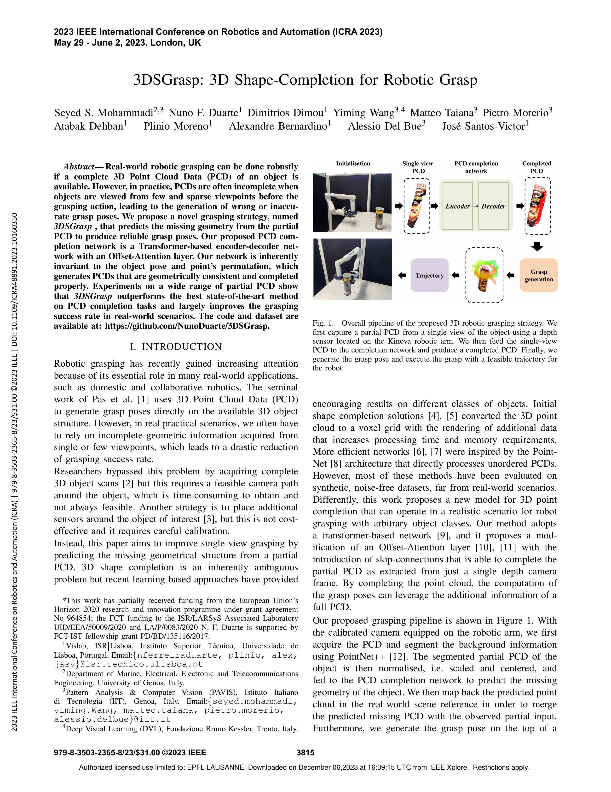

IEEE International Conference on Robotics and Automation (ICRA 2023)
Nuno Ferreira DuarteSeyed S Mohammadi (1) et al. University of Lisboa (1) IIT/University Genoa

Abstract
Real-world robotic grasping can be done robustly if a complete 3D Point Cloud Data (PCD) of an object is available. However, in practice, PCDs are often incomplete when objects are viewed from few and sparse viewpoints before the grasping action, leading to the generation of wrong or inaccurate grasp poses. We propose a novel grasping strategy, named 3DSGrasp, that predicts the missing geometry from the partial PCD to produce reliable grasp poses. Our proposed PCD completion network is a Transformer-based encoder-decoder network with an Offset-Attention layer. Our network is inherently invariant to the object pose and point's permutation, which generates PCDs that are geometrically consistent and completed properly. Experiments on a wide range of partial PCD show that 3DSGrasp outperforms the best state-of-the-art method on PCD completion tasks and largely improves the grasping success rate in real-world scenarios. The code and dataset are available at: https://github.com/NunoDuarte/3DSGrasp
@INPROCEEDINGS{10160350,
author={Mohammadi, Seyed S. and Duarte, Nuno F. and Dimou, Dimitrios and Wang, Yiming and Taiana, Matteo and Morerio, Pietro and Dehban, Atabak and Moreno, Plinio and Bernardino, Alexandre and Del Bue, Alessio and Santos-Victor, José},
booktitle={2023 IEEE International Conference on Robotics and Automation (ICRA)},
title={3DSGrasp: 3D Shape-Completion for Robotic Grasp},
year={2023},
volume={},
number={},
pages={3815-3822},
doi={10.1109/ICRA48891.2023.10160350}}